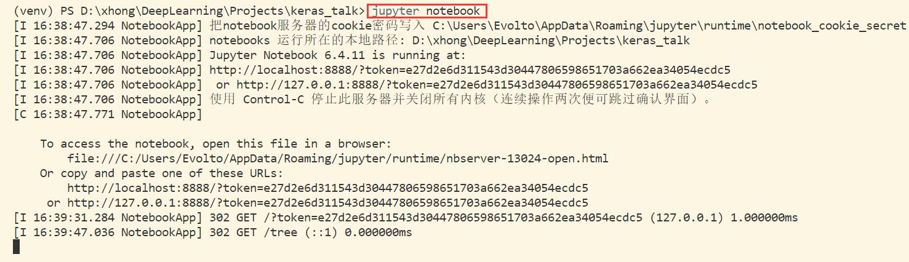
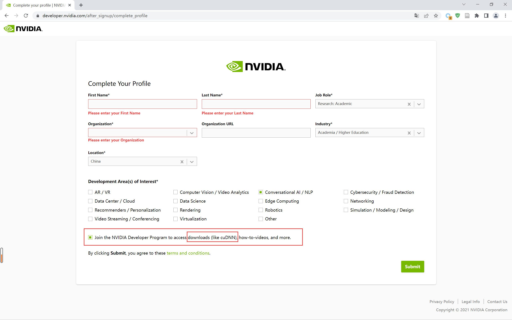
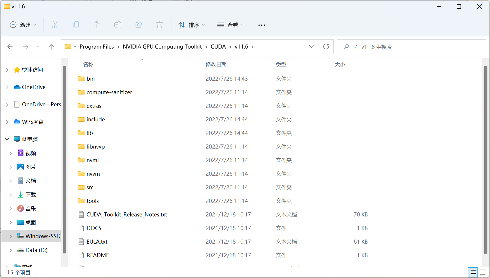

Keras 安装配置¶
1 安装 Miniconda / Anaconda¶
书接上回：Win11 安装配置 Miniconda
2 创建并激活虚拟环境¶
2.1 创建虚拟环境¶
创建名为 krs01 的 python3.8 虚拟环境
conda create -n krs01 python=3.8
2.2 激活虚拟环境¶
激活虚拟环境
conda activate krs01
3 安装并运行 Jupyter Notebook¶
3.1 安装 ipython 和 notebook¶
使用 conda 在对应的虚拟环境中安装
conda install -n krs01 ipython notebook

3.2 运行 Jupyter Notebook¶
运行 jupyter notebook
jupyter notebook
- vscode 终端界面

- 浏览器运行界面

- 注：按 Ctrl + C 关闭 Notebook
4 配置 Keras 环境¶
4.1 安装主要依赖包¶
conda install -n krs01 numpy matplotlib pandas pydotplus h5py scikit-learn

conda install -n krs01 scipy mkl-service libpython m2w64-toolchain

4.2 安装 TensorFlow¶
安装 TensorFlow
pip install --ignore-installed --upgrade tensorflow==2.10.0 -i https://pypi.tuna.tsinghua.edu.cn/simple
- 在安装 TensorFlow 时，Keras 也会随之安装，不用单独安装，且当前的版本中，TensorFlow 会同时安装 CPU 和 GPU 两个版本。
--ignore-installed --upgrade：忽略已安装的升级-i https://pypi.tuna.tsinghua.edu.cn/simple：切换清华源
https://www.tensorflow.org/install/source_windows#gpu
用 conda 安装 CUDA、cuDNN
conda install -c conda-forge cudatoolkit=11.2 cudnn=8.1.0
- 这里我们指定安装与
tensorflow 2.10.0匹配的CUDA11.2和cuDNN 8.1.0

5 安装 CUDA¶
5.1 检查当前版本¶
检查当前 nvidia 显卡版本指令
nvidia-smi
- 此时可以看到当前显卡驱动为
511.69，支持的最高 CUDA 版本为11.6

5.2 官网下载¶
- 官网：CUDA 11.2 下载

5.3 安装注意¶
与普通软件安装不同，在安装 CUDA 时，需要设置两次。第一次要求设置临时解压目录，第二次才是设置安装目录，这里建议默认即可，也可以自定义。安装结束后，临时解压文件夹会自动删除。切记，使用两次设置的路径不能相同，否则安装后会找不到目录。同时，因为是系统级软件，所以最好全程使用默认的安装位置。
- 解压 CUDA 安装包

- 选择自定义安装
- 取消安装 Visual Studio Integration 组件，防止后续报错

- 使用默认安装路径，不做修改

检查是否安装成功
- 检查当前 CUDA 版本指令
nvcc -V
- 输出版本即为成功

6 安装 cuDNN¶
6.1 官网下载¶
- 官网：cuDNN 下载，这里 必须登录账号 才能继续下载。

- 首次使用需要注册账号并输入详细信息

6.2 下载对应版本¶
cuDNN下载，因为之前安装的 CUDA 版本号为 11.2，所以我们选择对应版本的 cuDNN 进行下载。

6.3 安装 cuDNN¶
上面我们下载的内容实际上是压缩包文件，本质上就是对 CUDA 的关于深度学习的补充文件，我们需要将解压后的文件内容找到 CUDA Development 安装目录中对应目录，打开文件夹 逐一复制内部内容。需要注意的是：
lib 相关文件需要复制到 lib\x64 目录中。
1、cuDNN8.1.0 解压包内容
2、CUDA Development 安装目录内容

3、逐个复制内容到对应目录中

7 配置环境变量¶
在成功安装 CUDA 后，系统会自动添加环境变量

在环境变量中添加如下内容
如若在系统环境变量中没有，则需要自行添加如下内容。【注：此处安装目录以实际情况为准】
C:\Program Files\NVIDIA GPU Computing Toolkit\CUDA\v11.2\bin
C:\Program Files\NVIDIA GPU Computing Toolkit\CUDA\v11.2\include
C:\Program Files\NVIDIA GPU Computing Toolkit\CUDA\v11.2\lib
C:\Program Files\NVIDIA GPU Computing Toolkit\CUDA\v11.2\libnvvp
8 测试安装环境¶
import scipy
import numpy
import matplotlib
import pandas
import sklearn
import pydotplus
import h5py
import theano
import tensorflow
import keras
print('scipy ' + scipy.__version__)
print('numpy ' + numpy.__version__)
print('matplotlib ' + matplotlib.__version__)
print('pandas ' + pandas.__version__)
print('sklearn ' + sklearn.__version__)
print('h5py ' + h5py.__version__)
print('theano ' + theano.__version__)
print('tensorflow ' + tensorflow.__version__)
print('keras ' + keras.__version__)